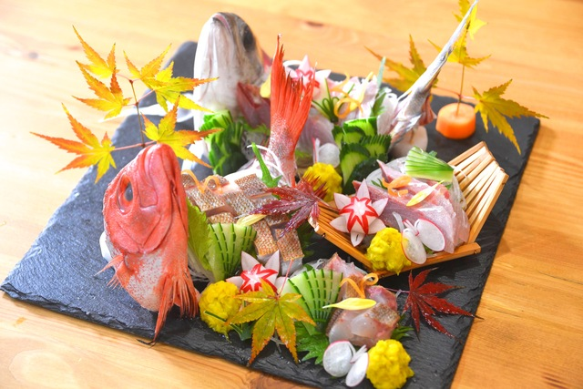
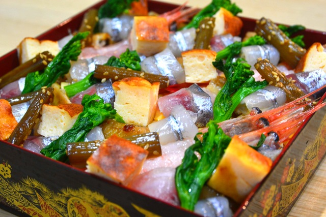

おせち（2020/12）
黒豆（2020/12）
唐墨（2020/12）
ドイツパンがだいぶうまく焼けるようになってきた（2020/12）
高知県大月町の鮮魚セット（2020/12）

静岡県伊東市の未利用魚セット（2020/11）
長野県天龍村の郷土菓子ゆべし（2020/11）
とろとろ親子丼（2020/11）
秋の吹寄せ（2020/11）
Chromeパンを作ろうとしたけど無理があった（2020/10）
たんぽぽオムライス成功した（2020/9）
懐かしいアケビを見つけた（2020/9）
マヒマヒをまるごと一匹調理する（2020/9）
鱧の骨を全部抜いて刺身にする（2020/8）
夏の懐石。竹取物語。（2020/8）
光り輝く竹
五人の貴公子
天の羽衣をまとって月の都へ
中秋の名月
Hefezopf スイスの編み込みパン（2020/8）
ラウゲン液でプレッツェルを焼く（2020/7）
新子の握り（2020/7）
初夏の姿造り（2020/6）
おくのほそ道を表現する（2020/6）
行く春や 鳥啼なき魚の 目は泪
五月雨の 降り残してや 光堂
荒海や 佐渡によこたふ 天の河
蛤はまぐりのふたみにわかれ 行く秋ぞ
刺身アート（2020/6）
鯉寿司（2020/6）
包丁を鏡面に磨く（2020/5）
手毬寿司（2020/4）
パンケーキ（2020/4）
輪違大根（2020/3）
ひなまつりのちらし寿司（2020/3）
